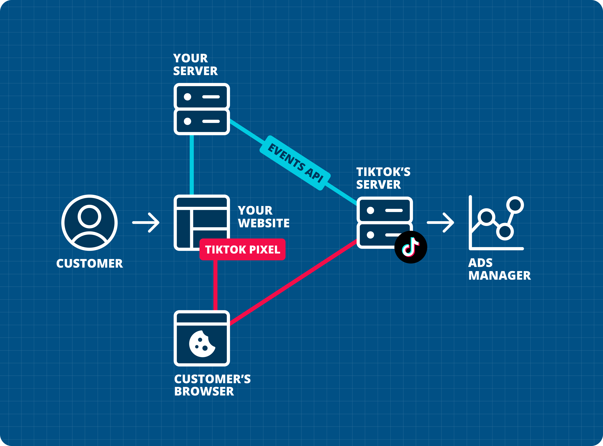
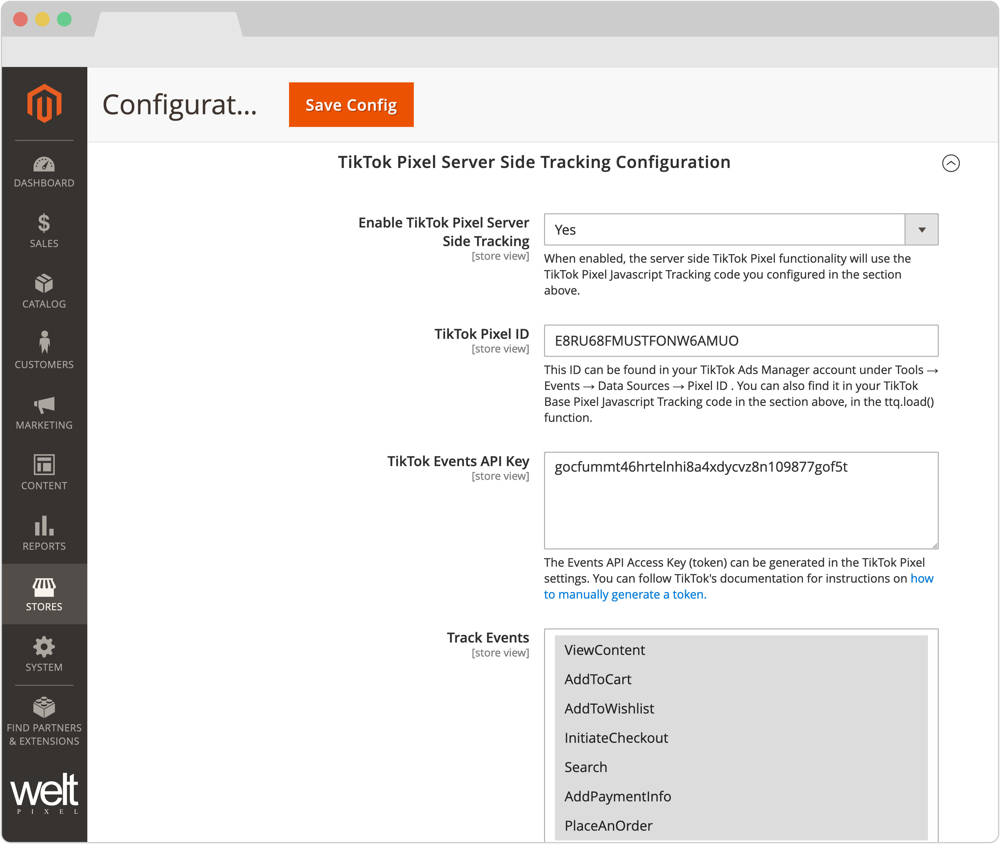
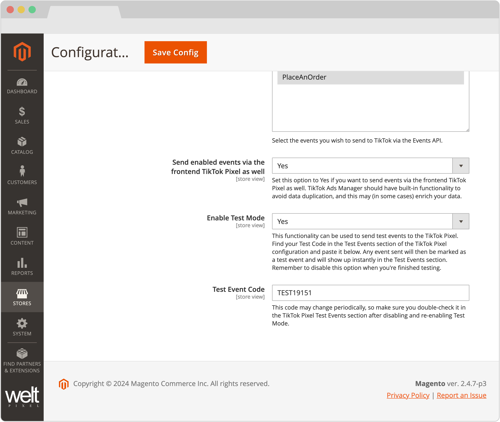

TikTok Pixel Events API Addon for Google Analytics 4 PRO
Requires the Google Analytics 4 PRO extension.
Redefining Advertising: TikTok Pixel Events API.
What is TikTok's Events API?
TikTok's Events API is a tool that provides advertisers a secure, direct & reliable bridge between marketing data and TikTok, across web applications, mobile applications and offline sources.
With Events API, advertisers can enhance and maximize the performance of the TikTok Pixel, allowing for the implementation of an extremely powerful marketing strategy, complete with the reliability of a server-side implementation & centralization of data sources.
What are the advantages of using TikTok's Events API?
- Improved targeting and ad deliverability - With TikTok Events API, advertisers can bypass the obstacles of browser limitations & inconsistencies, ensuring a more accurate and complete dataset is sent to TikTok, which is leveraged for measurement, optimization, and targeting.
- Granular control over shared data - TikTok's Events API ensures advertisers are only required to share the data that's absolutely necessary in order to meet and exceed marketing goals.
- Future-proof marketing efforts - Combining a server-side implementation with a frontend TikTok Pixel ensures a sustainable transition into the evolution of the advertising industry.
- Data consolidation into a single API - Increase efficiency and consistency by sending events to TikTok from all your channels.
How does it work?
Here's a handy diagram to show you how the TikTok Pixel and TikTok Pixel Events API work:

Features of the TikTok Pixel Events API Addon.
- Server-side Place an Order (Purchase) Event Tracking.
- Server-side Add Payment Info Event Tracking.
- Server-side Initiate Checkout Event Tracking.
- Server-side Add To Cart Event Tracking.
- Server-side Add To Wishlist Event Tracking.
- Server-side Search Event Tracking.
- Server-side View Content Event Tracking.
- TikTok Pixel Events API Test Mode integration.
- Ability to track selected events in conjunction with the frontend TikTok Pixel.
- Directly and fully integrated into the Google Analytics 4 PRO extension.
- Log functionality for in-depth debugging of events sent to the TikTok API.
- Easy setup, all that's required is the TikTok Pixel ID and the TikTok Pixel Events API Key.
- Option to track only specific customer groups
- Ability to send data to multiple TikTok Ads properties
Requirements for using the TikTok Pixel Events API Addon.
To use the TikTok Pixel Events API Addon, you'll need the following:
- A TikTok Pixel client-side integration, in order to gain access to your TikTok Pixel Tracking Base Code. Our Google Analytics 4 PRO extension comes with the possibility of setting up the client-side TikTok Pixel out of the box, which can be done within minutes.
- The Google Analytics 4 PRO extension enabled and configured.
HOW TO INSTALL
This extension is installed via Composer, which is the official and only supported installation method.
Step 1: Prerequisites
- Ensure your Magento version is compatible (2.3.0 - 2.4.8 and all Security Patches)
- Install on a testing/development environment first
- Set Magento to developer mode before installation
- Make sure you have Composer installed on your server
php bin/magento deploy:mode:set developer
Step 2: Access Composer Configuration
Head into the Downloadable Products section of your weltpixel.com account. This is where you'll be able to see your Composer Configuration Commands.
You'll need to have Composer installation enabled for your account. If you don't see the Composer Configuration Commands, please contact our support team.
Step 3: Configure Repository
Run the generated commands from your account. Example commands:
composer config repositories.weltpixel composer https://weltpixel.repo.packagist.com/your-id/
composer config --global --auth http-basic.weltpixel.repo.packagist.com token your-token
These commands will provide you access to the WeltPixel repository. Replace 'your-id' and 'your-token' with the actual values from your account.
Step 4: Install via Composer
Run the following command in your Magento root directory:
composer require weltpixel/module-ga4-tiktokss
Step 5: Enable and Setup
Run the following commands:
php bin/magento setup:upgrade php bin/magento setup:di:compile php bin/magento setup:static-content:deploy -f
Step 6: Cache Management
Flush any caches:
php bin/magento cache:flush
Step 7: Production Mode
If your store was in production mode, switch it back:
php bin/magento deploy:mode:set production
Wooohooo! The extension is now installed on your Magento store! Congrats!
How to Upgrade the Extension
- Step 1: Run: composer update (for the package)
- Step 2: Run setup commands: php bin/magento setup:upgrade, php bin/magento setup:di:compile, php bin/magento setup:static-content:deploy -f
- Step 3: Flush cache: php bin/magento cache:flush
How to configure the TikTok Pixel Events API Addon.
- Enable TikTok Pixel Server Side Tracking - When enabled, the server-side TikTok Pixel functionality will use the TikTok Pixel Javascript Tracking code configured in the client-side configuration section.
- TikTok Pixel ID - This ID can be found in your TikTok Ads Manager account under Tools → Events → Data Sources → Pixel ID. You can also find it in your TikTok Base Pixel Javascript Tracking code in the section above, in the ttq.load() function.
- TikTok Events API Key - The Events API Access Key (token) can be generated in the TikTok Pixel settings. You can follow TikTok's documentation for instructions on how to manually generate a token.
- Track Events - Select the events you wish to send to TikTok via the Events API: Place an Order / Add Payment Info / Initiate Checkout / Add To Cart / Add To Wishlists / Search / View Content


- Send enabled events via the frontend TikTok Pixel as well - Set this option to Yes if you want to send events via the frontend TikTok Pixel as well. TikTok Ads Manager should have built-in functionality to avoid data duplication, and this may (in some cases) enrich your data.
- Enable Test Mode - This functionality can be used to send test events to the TikTok Pixel. Find your Test Code in the Test Events section of the TikTok Pixel configuration and paste it below. Any event sent will then be marked as a test event and will show up instantly in the Test Events section. Remember to disable this option when you're finished testing.
- Test Event Code - This code may change periodically, so make sure you double-check it in the TikTok Pixel Test Events section after disabling and re-enabling Test Mode.
- Enable File Log - Enable the creation of a log file that shows the pushed event data. The tiktok-api.log file can be found in the var/log directory of Magento 2 root.
- Track Only Specific Customer Groups - If set to Yes, only selected customer groups will be tracked by TikTok server-side events.
- Send eCommerce Event Data to multiple TikTok Ads properties - Adding a new property here will only send the enabled eCommerce events in the TikTok Pixel Server Side Tracking configuration. If you need to also send Page View events, in order to stitch data and ensure attribution, you'll also need to add additional TikTok Pixel Tracking codes in the TikTok Pixel Tracking Javascript Code section above.
Change Log.
What's new in v.1.16.1 - March 6, 2026
- New Feature: Added a functionality whereby hashed customer data sent via the purchase event (email, phone, address, etc) is persisted after purchase and sent alongside all other triggered events. This works to increase match quality scores (EMQ for Meta, for example) for returning customers, leading to an overall enhancement in ad performance & optimziation.
What's new in v.1.16.0 - January 7, 2026
- Giving back: As a celebration of over 10 years of activity within the Magento 2 ecosystem, and as a way to give back to the community, a number of WeltPixel extensions (both FREE and paid) have officially gone fully Open Source via public Github repositories. Find the full list on Github.
- New Feature: Introduced composer as the official and singular installation method for all WeltPixel products. Previously, this was only available for the PRO version of the Google Analytics 4 extension, as well as the Marketing Suite Pro.
What’s new in v.1.15.11 - November 25, 2025
- New Feature: Augumented the addon's server-side logging functionality with a Magento Admin interface, allowing merchants to explore payloads and event logs without having to access the server.
What’s new in v.1.15.9 - October 28, 2025
- Magento Compatibility: Introduced compatibility with the latest released Magento 2 Security Patches - Magento 2.4.8-p3, Magento 2.4.7-p8, Magento 2.4.6-p13, Magento 2.4.5-p15 & Magento 2.4.4-p16.
- New Feature: Enhanced client and server-side purchases with additional data about the user (email, phone number) to significantly increase Event Match Quality.
- New Feature: Added an interactive form that can be submitted via the Magento Admin to provide an efficient method of submitting feedback/feature requests.
- Added adjustments to pricing parameter calculation to Begin Checkout and Add Payment Info events to ensure a higher degree of data accuracy.
What’s new in v.1.15.7 - September 2, 2025
- New Feature: Added a new Purchase event which should serve as a replacement for the existing CompletePayment and PlaceAnOrder events. The Purchase event was recently added by TikTok, while the two aforementioned events have been removed from their documentation. While this is the case, the TikTok API Addon can still send them, to maintain data consistency.
- New Feature: Optimized the addon's event logging functionality to increase clarity and improve the process of searching/filtering through logged events. All data logged for a specific event is now included on the same line. Before this release, every logged piece of information would take up a separate line, even if related to the same eCommerce event.
- New Feature: The addon now features the capability of sending data to multiple TikTok Ads properties via newly added Magento Admin settings. This allows you to send event data from the same Magento 2 instance to any number of TikTok Ads properties. This feature is also included in the Google Analytics 4 PRO extension and other API addons.
- Magento Compatibility: Introduced compatibility with the latest released Magento 2 Security Patches - Magento 2.4.8-p2, Magento 2.4.7-p7, Magento 2.4.6-p12, Magento 2.4.5-p14 & Magento 2.4.4-p15.
- Fixed an issue that would, in very specific cases, prevent the addon from sending purchase events via cron. This would happen when, for any reason, the ID of the product on the order that was supposed to be sent no longer existed (deleted product, for example).
- Fixed a bug related to a namespace typo that would sometimes cause an error upon adding a product to the cart.
What’s new in v.1.15.3 - June 20, 2025
- New Feature: Added options to allow for filtering of events based on Customer Groups. The extension now pulls all Customer Groups and allows merchants to select for which of those they'd like event data to be sent.
- Magento Compatibility: Introduced compatibility with the latest Magento 2.4.8-p1, 2.4.7-p6, 2.4.6-p11 & 2.4.5-p13 Security Patches releases. Upgrade ASAP to keep your store secure.
- Made various code optimizations related to Grand Total and Subtotal calculations in order to increase module customizability.
- Fixed a minor namespace typo.
What’s new in v.1.15.0 - April 22, 2025
- Magento Compatibility: Introduced compatibility with the new Magento 2.4.8 release, as well as the accompanying 2.4.7-p5, 2.4.6-p10, 2.4.5-p12 and 2.4.4-p13 Security Patches.
- PHP Compatibility: Introduced compatibilty with PHP 8.4, which is now officially compatible with the latest Magento 2.4.8 version.
What's new in v.1.14.19 - April 8, 2025
- New Feature: The TikTok API integration now includes a CompletePayment event, fired on the Success Page alongside the Purchase event. The CompletePayment event may be required for certain Ads configurations in TikTok.
- New Feature: Added additional User Data for events sent to TikTok Ads via the API. When available (logged in users, as well as those who place orders), the addon now sends Email and Phone Number data to TikTok.
- Fixed an issue that caused the incorrect user IP address to be sent when utilizing CDNs such as Cloudflare. Previously, the extension would always send the IP assigned by the CDN.
- Fixed an issue that sometimes prevented the extension's Order Exclusion by Status functionality from properly working when sending orders via cron.
- Added a default User Agent the extension uses when orders are sent via cron.
What's new in v.1.14.13 - February 17, 2025
- New Feature: The addon now benefits from the Google Analytics 4 PRO extension's Measurement Protocol Log functionality, which generates a log file in the var/log directory that includes information about each triggered event. The functionality can be enabled in the addon's Magento Admin configuration section.
- Removed deprecated Magento 2.2.x code version from extension package.
v.1.10.1 - November 14, 2024
- Initial extension release. This product is an addon and requires a version equal to or higher than 1.14.9 of the Google Analytics 4 PRO extension to be used.